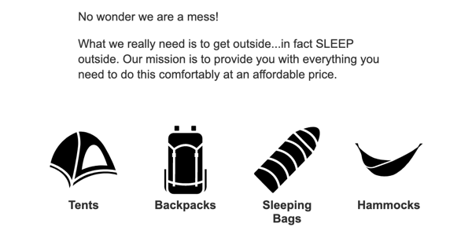

Many of the changes we have already made were to prepare the site to
be able to scale up to as many products as we would like. In this
activity we will add products organized from 4 categories: Tents,
Sleeping Bags, Backpacks, and Hammocks. We will need to change the
index page to show our four categories, and then build a dynamic
product-listing page that will pull the products from an API, and
display them.
Instructions
Complete the following assignment as a team. Designate one team member
as the "main driver" and collaborate on their copy of the code.
Everyone on the team should be actively engaged in writing the code
and contributing to the solution. Once the solution is working, make
sure that everyone on the team gets a copy of the code. Each week let
someone else be the "main driver" of the coding.
Core Requirements
The driver should visit the team's copy of the Trello board for
the project. Add each of the attending team members to the
"Team5: Expand inventory" task...then move it to 'Doing'. Read
the details of the card together.
The driver should make sure to pull any changes from
GitHub before proceeding. Next they should create a new branch
called initials--team5. So if the driver's name were
John Doe the branch should be called jd--team5
Refactor
Create a new directory in src called
product-listing, and create an
index.html file in it. Also create a
product-listing.js file in the JS directory. Add the
HTML to our new page to get the foundation up...header, footer,
styles, etc. (Hint...you may just want to use src/index.html as
a starting point. Then remove the banner and text.)
We just added a new page to the site. Remember to update your
vite.config.js file to let Vite know about it or you
will break the build!
Move the JS from the main.js that is responsible to
render our list of products to the new
product-listing.js file. Open up
product-listing/index.html in the browser to make
sure the tents we had before are still rendered.
You will need to fix some paths to get everything working
correctly...your page will not be able to find the CSS file or
the new JS file we made until you do. Do not worry about fixing
the image URLs yet. Those will change again anyway and we will
fix those later.
Finally add a grid of 4 boxes to the src/index.html page, one
for each category. They should look something like this:

Here are links to the icons. The icons are being used with a
Creative Commons license so we need to give credit to the
creator. We will do that in this case by adding it to the alt
attribute:
Tent
(alt="Tent Icon from Noun Project: Mustofa Bayu")
Sleeping Bag
(alt="Sleeping Bag Icon from Noun Project: Mustofa Bayu")
Backpack
(alt="Backpack Icon from Noun Project: Mustofa Bayu")
Hammock
(alt="Hammock Icon from Noun Project: Paul Richard")
Each of the category elements should link to
product-listing/index.html. Make sure to pass the
correct category as part of the URL. (tents, backpacks,
sleeping-bags, hammocks).
If you need a reminder of how to add a URL parameter to a link
check out the template function in ProductList.mjs.
It has an example of passing a parameter.
Environment variables
We are about to change our application so that it communicates
with an API server. This server will provide endpoints that we
can hit to do things like pull product information, login users,
submit orders, etc. While we are working we will be making many
changes that we would not want to show up in a production
environment. It would be nice then to have a test or development
server we can use during development, where we can change
anything we need without worry, and another production or server
that has the real data that must be protected.
This separation is very common in development. This means
however that we are going to have to change the URL we use
depending on whether our code is running in a development
environment or a production environment. We could do this
manually...but chances are that at some point you WILL send your
development server URL to production at some point. That would
be bad.
Because this is a common problem a solution has been developed:
Environment variables. Values that change automatically
depending on where the code is running. Most of the time we
create these in a file called .env (dotenv). We are
using Vite as our build tool...it actually has the ability built
in to work with these files. It will automatically look for a
.env file and if it finds one it will make the
variables defined therein available through a special global:
import.meta.env.
Because Vite is for building frontend projects where all the
code ends up in the browser, it gives us a way to control which
of our environment variables become available in our client
facing code. Any variable we want to use in the code we send out
will need to be prefaced by VITE_. If you look in
the src directory you will see a file named
.env.sample, contained in that file is a variable we
need defined:
VITE_SERVER_URL=http://server-nodejs.cit.byui.edu:3000/. This server URL is not something we need to keep secret, and
it is something we need available in our code, and so it has the
VITE_ prefix. You will see how to use that in the
next step.
Open .env.sample and File->Save As just
.env so that Vite will see it. NOTE! Each member of
the team will need to do this!
You may be wondering why that file is called
.env.sample. Environment variables often contain
sensitive information in them and so it is common to not
include those files in the Git repo for the project. If you
take a look in the .gitignore file that is part of
the project you will see in fact that we have already been
ignoring .env files. Files named that will never
be tracked by Git.
I wanted to give you an example of what the file needed to
look like however, and so sent a sample of it with a different
name. This is also a pretty common practice.
The next question you may have is: "well if the environment
variables do not get included in the repo...how do I get them
out to my production environment?" We will address that below.
When our code gets deployed to Netlify (our production
environment) It will need to know the server URL it should use.
Since our .env file will not be part of the repo we
have to set it a different way. Have someone in the team login
to Netlify and pull up this project. Then goto "Site
Settings->Environment Variables". Add a new variable. The key
should be "VITE_SERVER_URL", and the value should be
"https://wdd330-backend.onrender.com". We will be using the same
value in all contexts.
Pulling from an API
Next we need to modify our code to pull the product data from an
API instead of from the local JSON file. Because of the way we
have structured our code this should be fairly easy.
Open up ProductData.mjs. In the constructor we set a
path for the products. That path was based off of the category
(up until now tents) and would later be used to pull the data.
With the API we actually don't need to set the category in our
DataSource anymore. We can pass it in when we need it. This will
make our DataSource more flexible. Add the following line to the
top of the file:
const baseURL = import.meta.env.VITE_SERVER_URL
Notice we are using the environment variable we set in the
.env file!
Then remove the category and path from the constructor. Then in
the getData method add a parameter of
category. Lets also take this opportunity to change
our fetch to use async/await. Change the
getData function to look like this:
Why data.Result at the end of that? It used to be
simply data. The data sent back from the API is
structured differently. We will have some other corrections to
make because of this as well.
Open ProductList.js We will need to change the line
in the init() method where we get our data. It
should look like this after our changes:
const list = await this.dataSource.getData(this.category);
You should now be seeing products listed if you click on one of
the links, but there are two issues. The first is that no images
are showing. The second is that all the links are showing the
same list of products.
Pulling the correct products
You should be passing category in the URL to the
product-listing page. We need to retrieve it from the
parameter in product-listing.js. Then send it into
the ProductList class. Remember that we created a
method in utils.js earlier to grab parameters from a
URL.
We have been moving a lot of things around. At this point your
product-list.mjs file should look something like
this:
import ProductData from './ProductData.mjs';
import ProductList from './ProductList.mjs';
import { loadHeaderFooter, getParam } from './utils.mjs';
loadHeaderFooter();
const category = getParam('category');
// first create an instance of our ProductData class.
const dataSource = new ProductData();
// then get the element we want the product list to render in
const listElement = document.querySelector('.product-list');
// then create an instance of our ProductList class and send it the correct information.
const myList = new ProductList(category, dataSource, listElement);
// finally call the init method to show our products
myList.init();
Fix the Product Detail page.
If you try and click on on of the products to see the
details...you will notice it is broken. We will need to make
some of the same changes to product.js and
productDetail.js that we made for the product
listing. Get the detail pages working again.
There are a few places we need to check to do this. We should
make a list:
Because we moved the product listing page into a directory
the URL listed in the template for a product card in
product-listing/index.html will be wrong. That
needs to be fixed first.
We removed the requirement for the DataSource to be set to a
specific category, and we updated the
getData method. Now we need to fix the
findProductById method. Before we did not have
the ability to request a specific product, we could only
request all products. The API we are using now has the
ability to query directly for this. The URL for the API
endpoint you need to hit is:
baseURL + `product/${id}`
Once you get it working you will find that the image is
broken. We need to figure out why. See below for more on
this.
Stretch Goals
Fix the images
The data structure of our products changed slightly. This is why
the images are broken. Analyze the data coming back from the API
and figure out how to fix this issue. (You can use the
PrimaryMedium image for the productList, and
PrimaryLarge for the productDetail for now.)
Fix the title
Title of the page currently says: Top Products. Add the category
to that so that it looks like this: Top Products: Tents (if the
tent category link was selected);
Instructor's Solution
As a part of this team activity, you are expected to look over a
solution from the instructor, to compare your approach to that one.
One of the questions on the I-Learn submission will ask you to provide
insights from this comparison.
Please DO NOT open the solution until you have worked through this
activity as a team for the one hour period. At the end of the hour, if
you are still struggling with some of the core requirements, you are
welcome to view the instructor's solution and use it to help you
complete your own code. Even if you use the instructor's code to help
you, you are welcome to report that you finished the core
requirements, if you code them up yourself.
After you have completed what you can, and reviewed the instructor's
solution, the driver should commit and push their changes, then submit
a pull request for this branch. Then review the pull request as a
team, close it, and merge the branch back into Main. Finally, someone
should move the Trello card to "Done".
After merging the pull request you should also check to make sure the
production site on Netlify is still working!
Submission
When you have finished this activity, please fill out the assessment
in I-Learn. You are welcome to complete any additional parts of this
activity by yourself or with others after your meeting before
submitting the assessment.